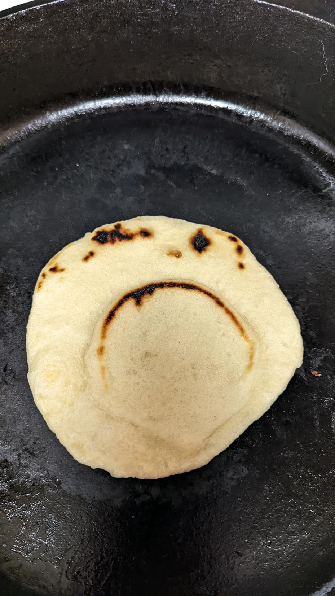

Flour Tortillas

Tortilla Description
These homemade flour tortillas are great for tacos, burritos, and quesadillas. Use only a few ingredients to make these delicious vegan tortillas. The recipe is great doubled, too!
Ingredients
- 384 grams all-purpose flour
- 1 tsp. baking powder
- 1 tsp. kosher salt
- 1/3 c. neutral cooking oil
- 1 c. water (100 degrees Fahrenheit)
Steps
- Combine flour, salt, and baking soda in a medium sized bowl
- Add oil and water to the dry ingredients.
- Using a handheld mixer, mix ingredients for 1-2 minutes until the mixture begins to come together.
- Mix another 1-2 minutes until the mixture forms a smooth ball.
- Partition the dough into 46 gram balls. Place dough balls on a floured surface. Cover and let dough rest for 15-120 minutes.
- Heat a dry pan over medium heat.
- Roll tortillas into thin circles.
- Cook tortillas, one at a time. Flip tortillas when bubbles form.
- Store tortillas in an air-tight container.